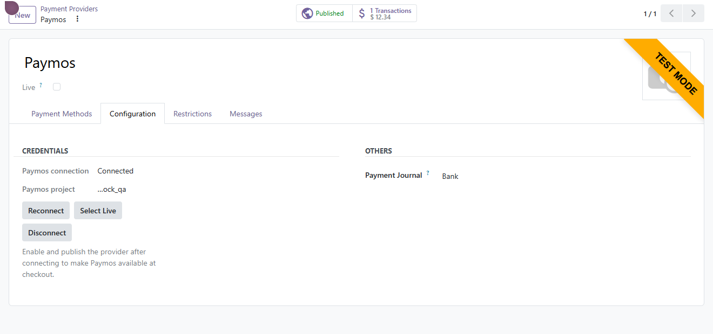
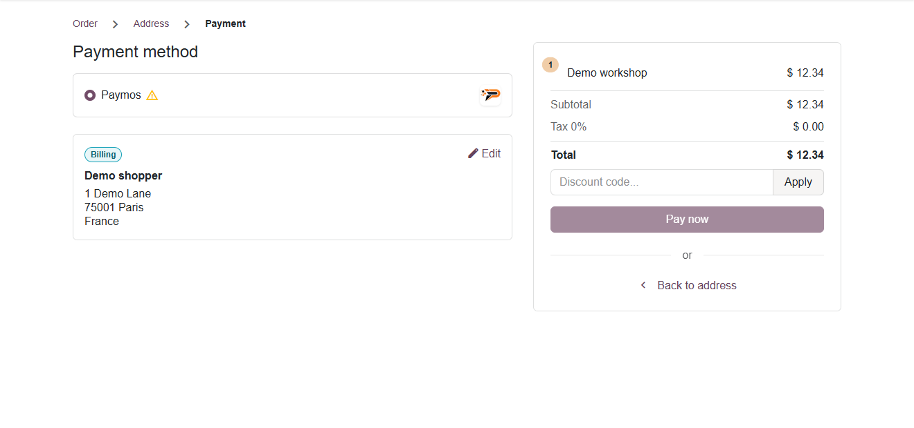
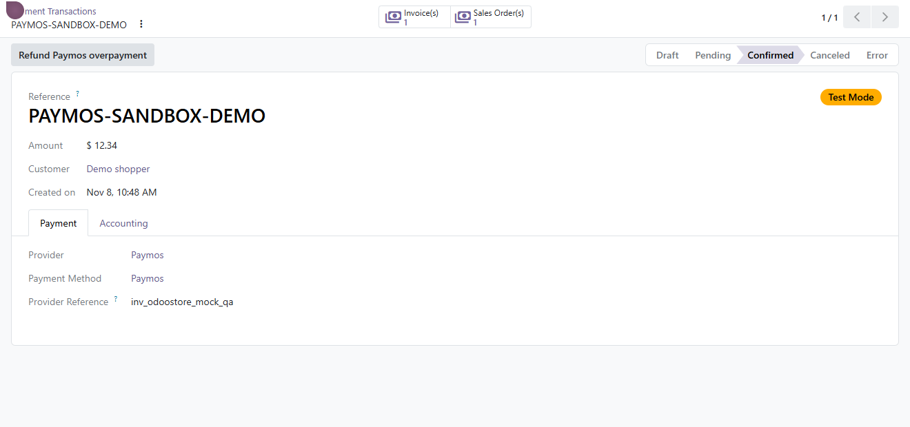

Add Paymos to a self-hosted Odoo 20.0 website shop. Buyers pay on the Paymos checkout. Odoo confirms the linked order after checking the signed notification and matching the invoice with Paymos.
Use a Paymos account and project, a public HTTPS storefront, and a bank journal for the same Odoo company. Start in Sandbox and verify a test order before going live. Odoo Online does not support this add-on. Odoo.sh is not verified.
An Odoo system administrator chooses Connect Paymos and approves the project. A free installation does not require connecting a project. Connect is required to take payments through Paymos.

Paymos receives the store URL during connection. An invoice request sends the project identifier, saved order amount, currency, and an opaque reference. For an order with 1 to 50 valid product lines, it also sends each line’s title, quantity, unit price, and optional plain-text description for the Paymos checkout. It does not include the buyer’s name or email. Paymos hosts the payment page and sends the signed result back to Odoo.

Use Refund on the accounting payment for the full original amount or Refund Paymos overpayment on the payment transaction for the excess. Paymos calculates the token amount and returns it to the recorded payer. Odoo records the verified outcome.
